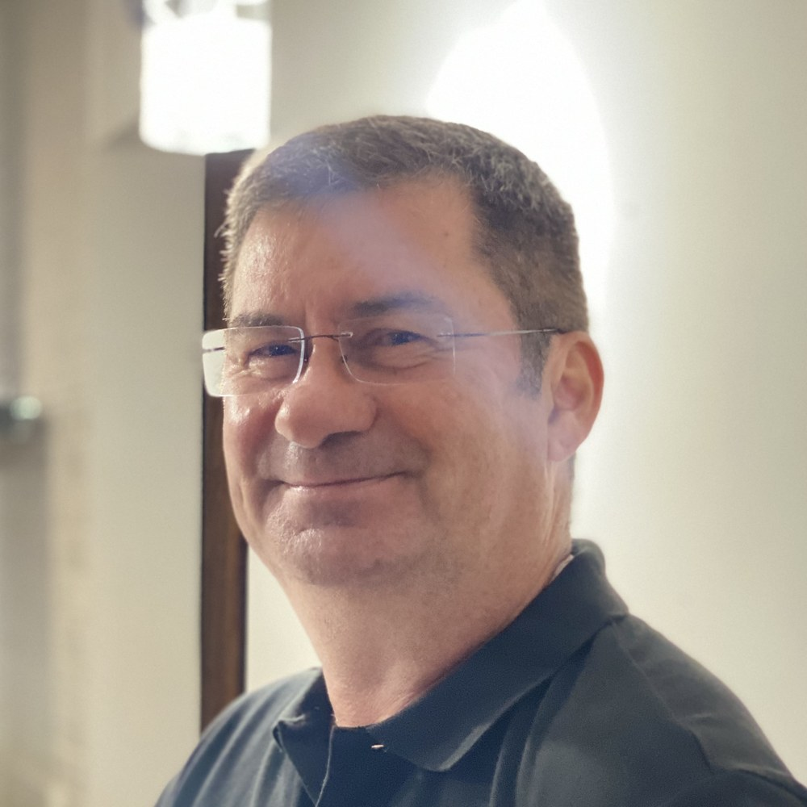
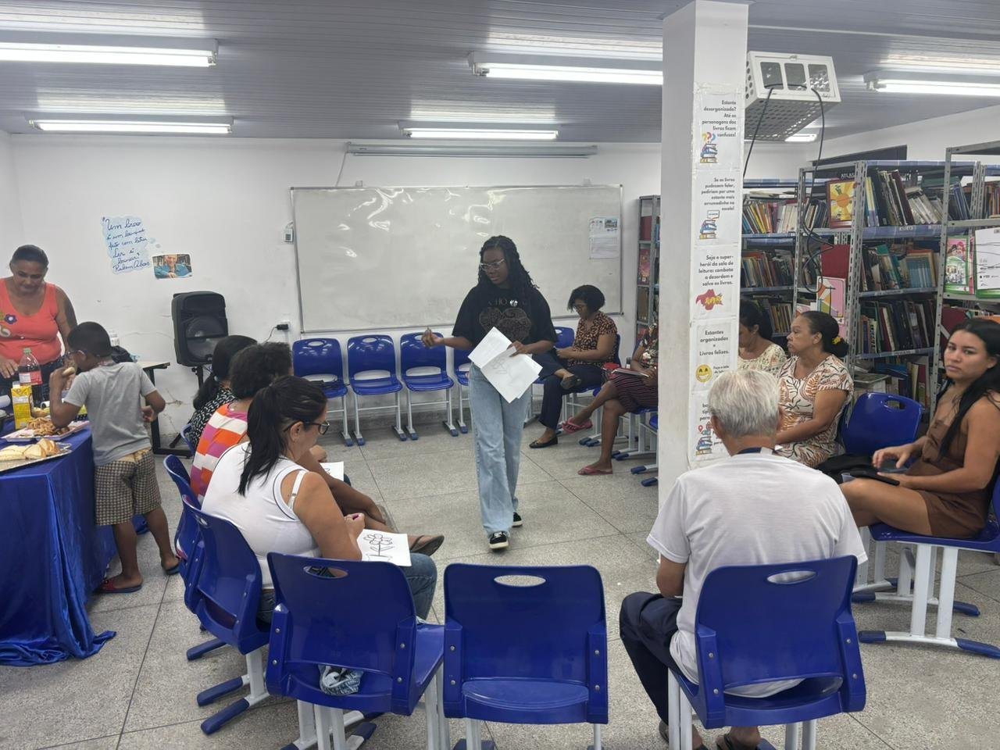

Um ano dentro da rotina da rede pública de uma cidade do interior de Minas Gerais, com redes de saúde e educação completas.

Inscrição para o Impulsiona Startups, eixo Inovação em Saúde, 2026 a 2027.
Inscrição para o Impulsiona Startups, eixo Inovação em Saúde, 2026 a 2027.

Problema
trabalham no SUS, a rede pública de saúde.
sustentam a educação básica.
movem a assistência social.
Não existe plano B para três em cada quatro pessoas deste país.
na educação ligam o adoecimento ao trabalho.
na saúde dizem o mesmo (São Paulo).
já se afastaram por saúde.
de quem faz o SUS são mulheres.

Como a PAAPS e a Serasa se conversam
Inadimplência, faixa de renda, exaustão e atenção: Serasa Experian, Mapa da Inadimplência 2026, e Saúde Financeira e Bem-Estar do Trabalhador Brasileiro, SalaryFits · Remuneração média: Ipea, Atlas do Estado Brasileiro · Erro no atendimento: British Medical Journal, 2022, revisão de 35 estudos · Medida Provisória 1.355/2026. Foto: Radilson Carlos Gomes, fotógrafo do SUS.
Por que agora
é o custo do INSS com afastamentos por transtorno mental, por ano.
afastamentos por transtorno mental em 2025, recorde da década.

Solução

Pré-validação
Refazenda Rio Xopotó, Desterro do Melo (MG), 2024.
Modelo de negócio
A operação PAAPS entrou no contrato social em 1º de abril de 2026 · Ata de Registro de Preços nº 41/2026, Pregão nº 90.001/2026, Central de Compras do MGI · IGD, competência de maio de 2024: Informe Bolsa Família nº 46, MDS. Refazenda Rio Xopotó, Desterro do Melo (MG), 2024.
Mercado
Investimento de impacto: GIIN, Sizing the Impact Investing Market e State of the Market · Vínculos na psicologia: CensoPsi 2022, Conselho Federal de Psicologia, 20.151 respondentes · Rodas de equipe no Reino Unido e Irlanda: Schwartz Center for Compassionate Healthcare, licenciador do método, e Point of Care Foundation, que conduziu o programa de 2009 a 2025 · Municípios: IBGE. Foto: Radilson Carlos Gomes, fotógrafo do SUS.
Go to market
Lei 14.133/2021, art. 74, I e art. 75, II · Limite de dispensa de 2026 atualizado pelo Decreto nº 12.807/2025 · Consórcios públicos: Lei 11.107/2005 · Rodas de equipe no Reino Unido e Irlanda: Schwartz Center for Compassionate Healthcare. Foto: AgSUS, Agência Brasileira de Apoio à Gestão do SUS.
Concorrência
Pregão do Governo Federal para saúde mental no serviço público: Ata de Registro de Preços nº 41/2026, Pregão nº 90.001/2026, Central de Compras do Ministério da Gestão e da Inovação em Serviços Públicos · Conexa e Zenklub: receita recorrente divulgada em 2024 · Rodas de equipe no Reino Unido e na Irlanda: Schwartz Center for Compassionate Healthcare. PAAPS em campo, Minas Gerais.
Tecnologia
app Ponto de Apoio do Servidor
Regime Geral: Anuário Estatístico da Previdência Social · Servidores federais: base de afastamentos e licenças do Executivo Federal · Servidor municipal: a literatura acadêmica registra a pesquisa nessa população como escassa, com estudos de caso municipais isolados. PAAPS em campo, Minas Gerais.
Roadmap

Projeções
Projeção com as premissas abertas: R$ 1.100 por Roda de Equipe, prefeitura atendida diretamente a R$ 924 mil ao ano, licença anual do método a R$ 64,8 mil e margem de contribuição de 59,3% por município. As demais premissas do modelo estão no anexo, no fim do deck. Refazenda Rio Xopotó, Desterro do Melo (MG), 2024.
Métricas projetadas
LTV em margem bruta sobre cinco anos, com atendimento direto no ano 1 e licença nos anos 2 a 5. Foto: Radilson Carlos Gomes, fotógrafo do SUS.
Equipe
 Mallu Vasconcellos
Founder da PAAPS Brasil. Formanda em psicologia (PUC-SP - PUC-MG)
Mallu Vasconcellos
Founder da PAAPS Brasil. Formanda em psicologia (PUC-SP - PUC-MG)
 Fabiane Vasconcellos
Founder da DIGGING, sócia da PAAPS Brasil. Ex-diretora de planejamento estratégico do Grupo Pão de Açúcar. Executive coach e psicanalista de grupos, 25 anos em gerências e diretorias e 12 de consultoria
Fabiane Vasconcellos
Founder da DIGGING, sócia da PAAPS Brasil. Ex-diretora de planejamento estratégico do Grupo Pão de Açúcar. Executive coach e psicanalista de grupos, 25 anos em gerências e diretorias e 12 de consultoria
 Gustavo Faria
Especialista em comunidade e relacionamento, com estratégia de community led growth
Gustavo Faria
Especialista em comunidade e relacionamento, com estratégia de community led growth

Luiz Sérgio Barbosa Consultor financeiro da PAAPS Brasil. Ex-diretor financeiro da FEBRABAN, com 45 anos de carreira no sistema bancário brasileiro Psicóloga Gabriela Diniz
Supervisão na metodologia PAAPS Brasil
Psicóloga Gabriela Diniz
Supervisão na metodologia PAAPS Brasil
 Psicólogo Lucas Pimenta
Supervisão na metodologia PAAPS Brasil
Psicólogo Lucas Pimenta
Supervisão na metodologia PAAPS Brasil
A escala conta com uso seguro de Inteligência Artificial para operações.


psicólogos na comunidade ativa
profissionais formados, atendidos ou mobilizados pelas pesquisas de campo da PAAPS


Serasa Experian e ACE Cortex,
Essa é Celina. Ela é Agente Comunitária de Saúde, e caminha às mais remotas casas do Brasil todos os dias, a 2 salários mínimos.
Anexo
Premissas do modelo: estrutura fixa de R$ 12 mil por mês, crescendo até R$ 150 mil no ano 5 · pró-labore de R$ 10 mil por mês para a sócia que conduz a PAAPS · parecer jurídico em inexigibilidade a cada contrato e contabilidade especializada mensal, ainda em orçamento: cerca de 3% da receita no ano 1 e menos de 1% a partir do ano 2 · saída do Simples Nacional no ano 3 · o Diagnóstico 360° a R$ 10 mil é porta de entrada, contabilizada como investimento comercial · A margem operacional do slide 14, de 41% a 46%, é o que sobra depois de custo direto, tributos, estrutura fixa e assessoria, e antes do pró-labore: R$ 384 mil no ano 1 e R$ 5,70 milhões no ano 5 · Modelo de negócio completo mediante solicitação. PAAPS em campo, Roda de Equipe.